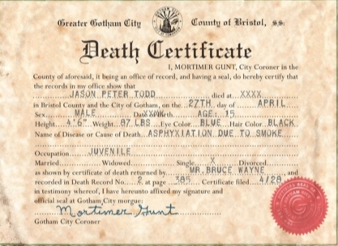

The Death of Jason Todd
Jason was super excited to be the next Robin, even saying “I'm Robin and Robin gives me magic”. He was smart and quick witted, albeit a bit reckless, but overall a hopeful kid. However, after the storyline in Batman #424, where a criminal can’t be prosecuted due to diplomatic immunity and his victim, Gloria, commits suicide out of fear that her rapist will come after her, Jason begins to see the worst in the world. When Jason goes to confront the criminal, Felipe Garzonas, Felipe ends up falling out the window and dying. Batman believes Jason pushed him, though Jason is adamant that Felipe fell. After this incident, Jason became more reckless and violent when out as Robin, which eventually led to Batman benching him as Robin.
Jason runs away and returns to Crime Alley where he grew up. While there, he meets one of his old neighbours who gives him a box of his parents' old belongings that she was able to save from their old apartment. He ends up finding his birth certificate and discovers that Catherine Todd was not his birth mother, due to damage to the papers, all he knows is that his mothers name starts with an S. He finds his fathers phone book in the belongings and searches for who his potential mother could be and finds three options: Sharmin Rosen, Sandra Wu-San, and Sheila Haywood. Jason ends up leaving a note for Alfred Pennyworth and books flights to meet each of the three women. He ends up running into Batman who was searching for the Joker. Together, they narrow down the list until Sheila Haywood is the only one left.
In Ethiopia, they meet Sheila and confirm that she is, indeed, Jason's birth mother. Batman ends up leaving him alone to spend time with his mother while he goes to find and stop the Joker. However Jason finds out his mother is being blackmailed by the Joker. He reveals to her that he is Robin to try to help her, but instead she betrays him, handing him over to the Joker. He beats Jason with a crowbar as his mother watches, and eventually sets a bomb. The Joker betrays Sheila, tying her up and leaving them both to die in the warehouse. With what little strength Jason has left, he attempts to save his mother, untying her and making it to the door, only to realize it was locked.
At the same time Batman was on his way over to try to save Jason, but in the end he only makes it in time to watch as the warehouse explodes. He searches the rubble only to find Jason's dead body.
Jason Todd was 15, standing at 4’6”, weighing only 87 pounds when he died on April 27.

Image Source: pinterest